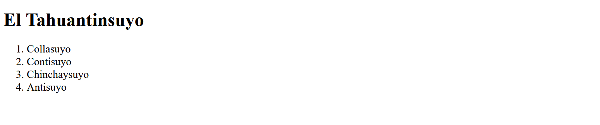

Codificación
Funciones de codificación
En html5svg2 los documentos HTML se codifican empleando las funciones dTag, dEtq y dCmt. Cada una de estas funciones devuelven una lista de texto codificado de acuerdo a la sintaxis del lenguaje de marcas de HTML. Estas listas se introducen — según corresponda — por medio de los métodos cabecera() y contenido() en el objeto de la clase HTML5.
dTag
dTag(tag, obj, **js)
# tag: marca o etiqueta
# obj: contenido de la marca (texto o lista de texto)
# **js: argumentos clave:valor de la marca
La función dTag() se emplea para codificar el marcado que tiene la siguiente forma:
<marca arg0="val0" arg1="val1"> contenido </marca>
El ejemplo dado a continuación
dTag('h1', 'Título', style="color:red;")
Genera el siguiente resultado
['<h1 style="color:red;">Título</h1>']
dEtq
dEtq(etq, **js)
# etq: marca o etiqueta
# **js: argumentos clave:valor de la marca
La función dEtq() se emplea para codificar el marcado que tiene la siguiente forma:
<marca arg0="val0" arg1="val1" />
Ejemplo
dEtq('img', src="imagen.png", alt="(imagen)")
Resultado
['<img src="imagen.png" alt="(imagen)" />']
dCmt
dCmt(obj)
# obj: texto o lista de texto
La función dCmt() se emplea para codificar comentarios. Estas no serán visibles en la página web.
Ejemplo
dCmt('Esto es un comentario')
Resultado
['<!-- Esto es un comentario -->']
Codificación de marcado anidado
El siguiente código HTML correspondiente a un ejemplo de una lista ordenada
<h1>El Tahuantinsuyo</h1>
<ol style="font-size:14pt">
<li>Collasuyo</li>
<li>Contisuyo</li>
<li>Chinchaysuyo</li>
<li>Antisuyo</li>
</ol>
se codifica de la siguiente manera
h = HTML5()
h.contenido(dTag('h1', 'El Tahuantinsuyo'))
lst = [
dTag('li', 'Collasuyo')[0],
dTag('li', 'Contisuyo')[0],
dTag('li', 'Chinchaysuyo')[0],
dTag('li', 'Antisuyo')[0]
]
h.contenido(dTag('ol', lst, style="font-size:14pt"))
y se mostrará en la página web de la siguiente forma 